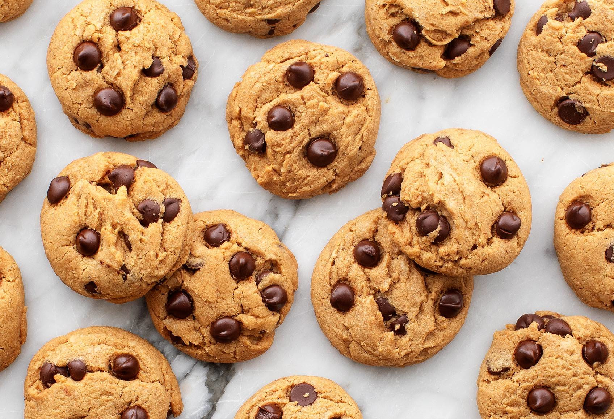

Chocolate Clip Coookies

These cookies are the pinnacle of perfection!
If you want a big, fat, chewy cookie
like the kind you see at bakeries and specialty shops,
then these are the cookies for you!
Ingredient
- 2 cups all-purpose flour
- 1/2 teaspoon baking soda
- 1/2 teaspoon salt
- 3/4 cop unsalted butter, melted
- 1 cup packed brown sugar
- 1/2 cup white sugar
- 1 tablespoon vanilla extract
- 1 egg
- 1 egg yolk
- 2 cups semisweet chocolate chips
Steps
- Preheat the oven to 325 degrees F (165 degrees C). Grease cookie sheets or line with parchment paper.
- Sift together the flour, baking soda and salt; set aside.
- In a medium bowl, cream together the melted butter, brown sugar and white sugar until well blended.
- Beat in the vanilla, egg, and egg yolk until light and creamy. Mix in the sifted ingredients until just blended.
- Stir in the chocolate chips by hand using a wooden spoon.
- Drop cookie dough 1/4 cup at a time onto the prepared cookie sheets. Cookies should be about 3 inches apart.
- Bake for 15 to 17 minutes in the preheated oven, or until the edges are lightly toasted.
- Cool on baking sheets for a few minutes before transferring to wire racks to cool completely.